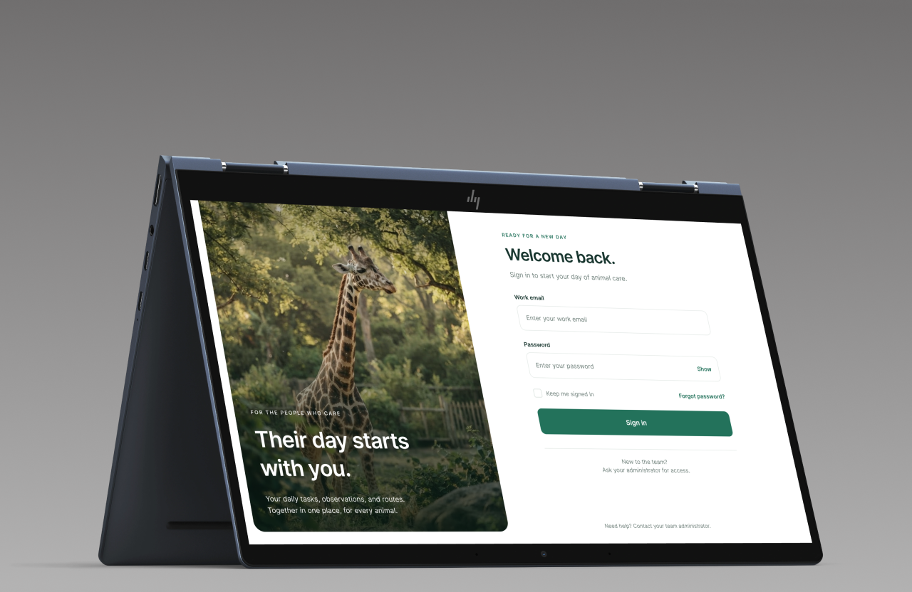
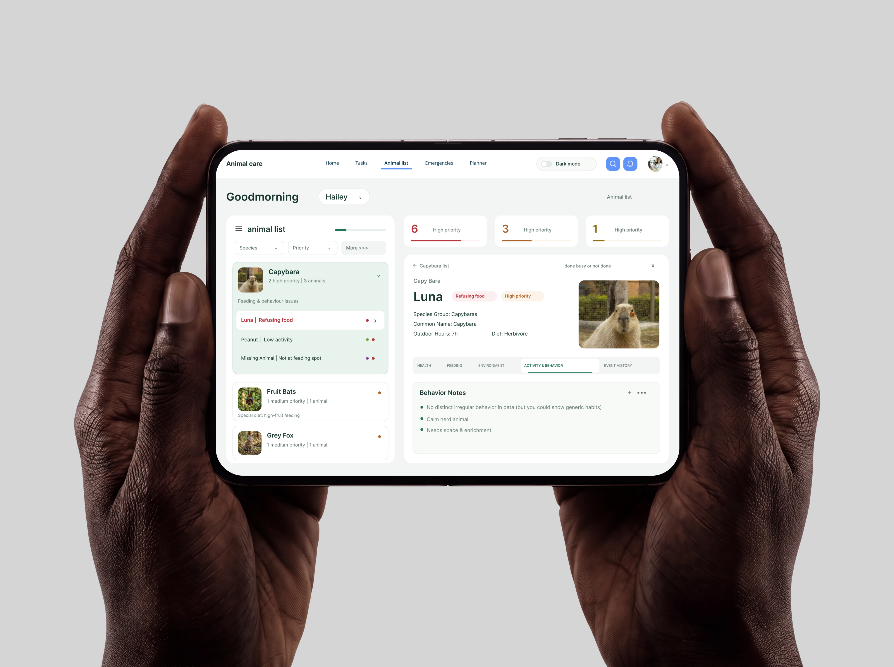
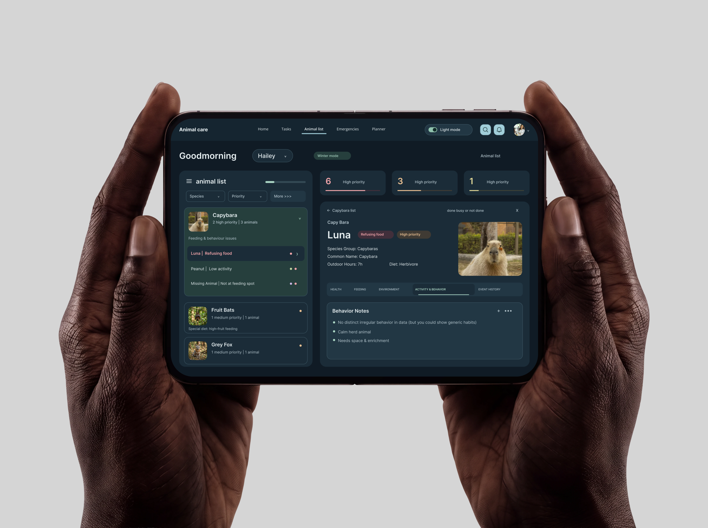
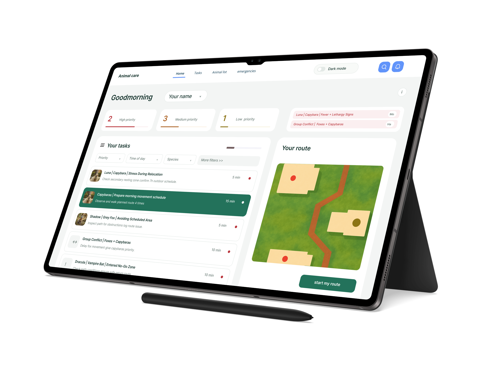
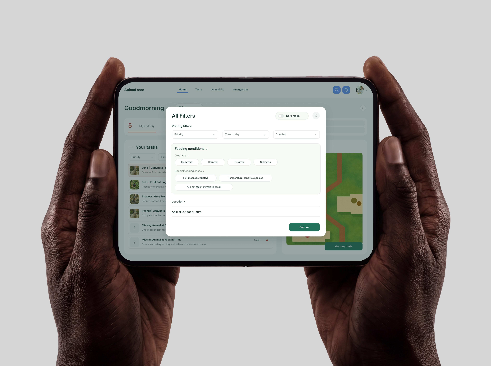

Animal Care Zoo
This project is designed for animal caretakers to keep track of their animals in a smart and organized way, while making important information easy to access at a glance.
About the Assignment
The assignment was challenging because there are many different animals, each with different needs, schedules, and care details. I had to make sense of all this information and turn it into a clear system that helps caretakers stay on top of everything.
Problem Statement
Animal care involves a lot of different information: feeding times, routines, health notes, and daily tasks. The difficulty was organizing all this data in a way that feels clear and useful, without losing important details. By sorting and structuring the information smartly, I was able to create a dashboard that supports caretakers in a practical and efficient way.
My Role
- UI Design
- Concept Development
- Interface Design
- User Experience
- Research-based Design
- Information Architecture
- Visual Storytelling
- Design Systems
Key Focus
The main goal was to help animal caretakers keep track of their animals in a smarter way. By sorting the information clearly and making it easy to understand, the concept turns a complex system into something more manageable and useful in daily care.
Demo
View the process and all screens
View on MiroProject Images



